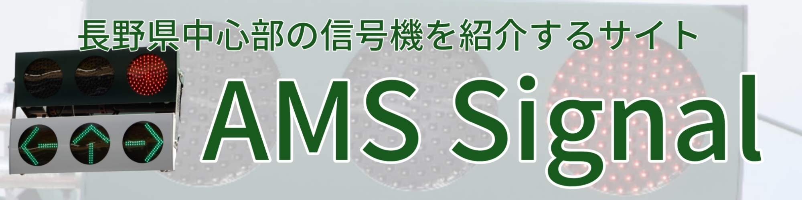

リンク集
信号機に関するページのリンクを貼ってあります。
信号機系サイトといったら定番のサイトです。

すでに開発者銀河連邦さんの地元神奈川県は全制覇されています。
信号機の館 By KiroChannelさん （2024/03/10 時点でリンク切れ）
こちらもGTLibraryと同じく定番サイトです。レア物がたくさん！

当サイトのバナーについて

サイズ：2000×500当サイトへのリンク(https://www.gasukaku.net/amss/ 又はhttps://amss.gasukaku.net)はフリーですが、一声かけてもらうと助かります。
また、バナーの縮小拡大は自由ですが、高さ、幅を変えることやトリミング等はご遠慮ください。
ホームページでこのバナー画像を使用する場合、ダウンロードや画像直リンクで貼り付けて下さい。
(バナー画像のURL:https://www.gasukaku.net/amss/banner2.jpg)
旧バナー